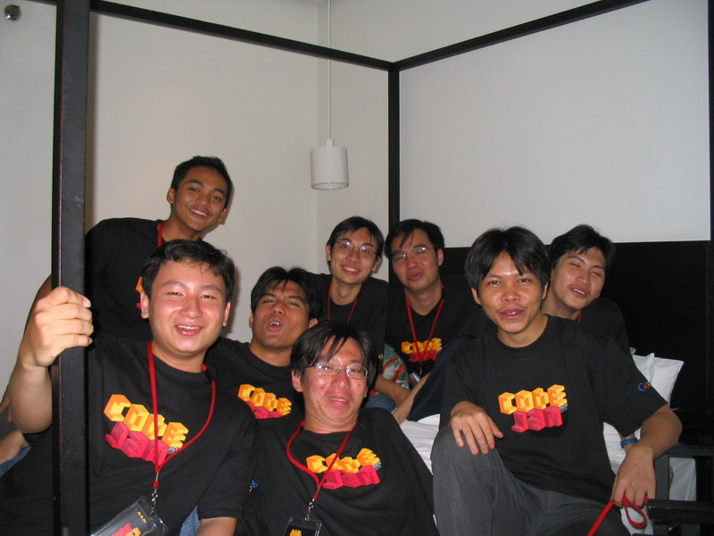
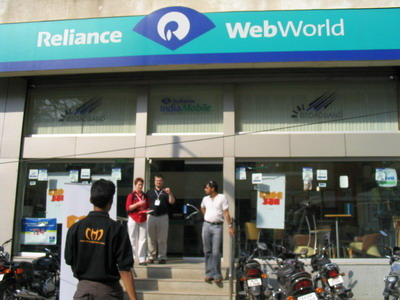
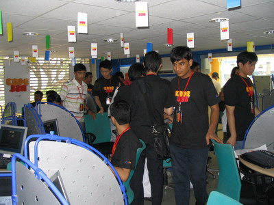
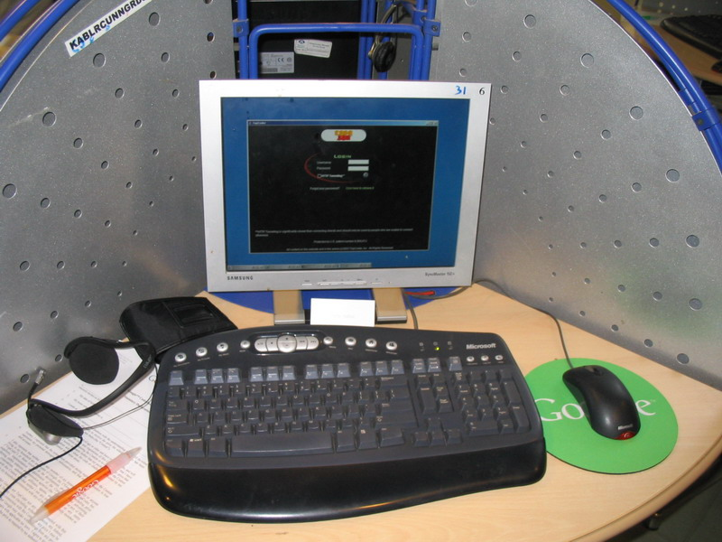
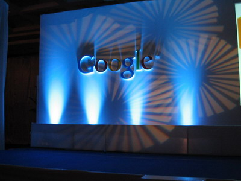
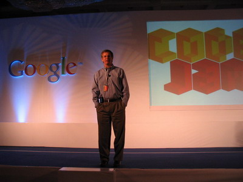
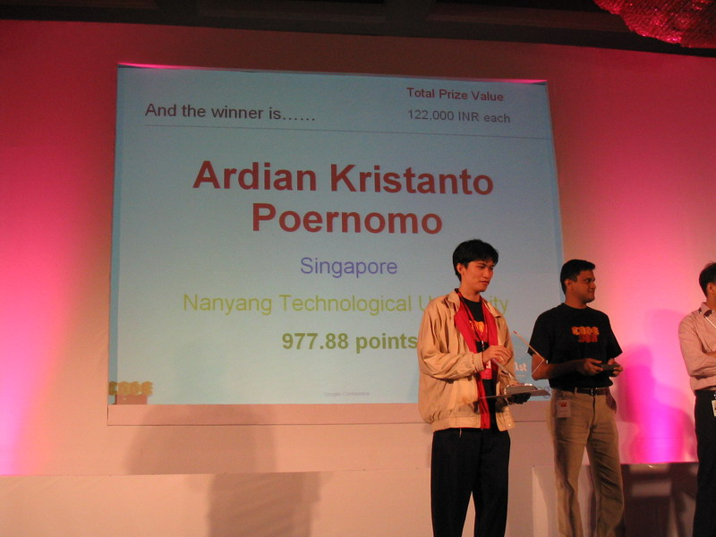
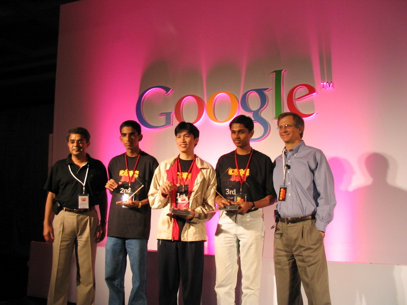
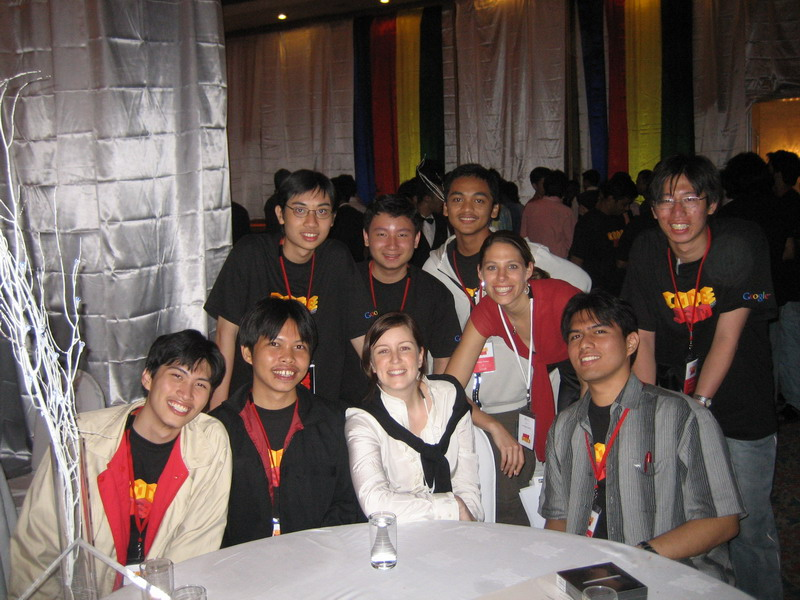
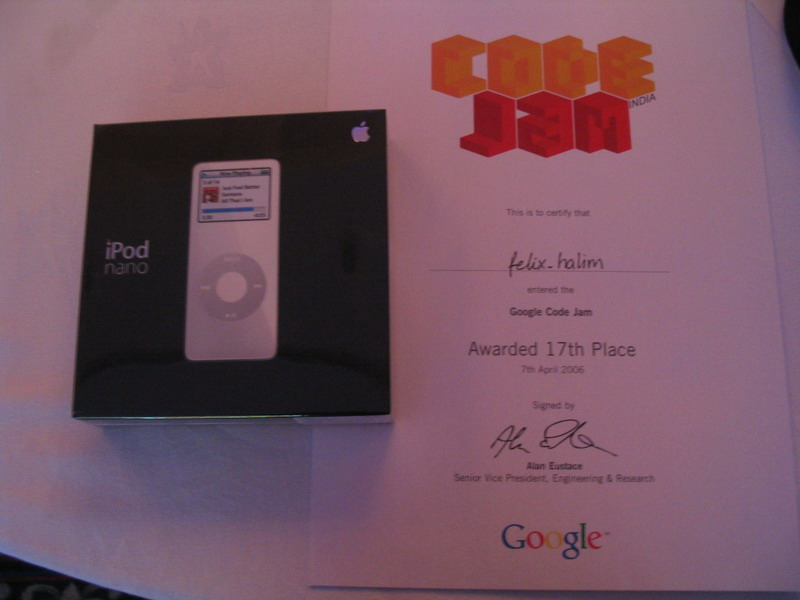

This is the second time I competed in Google Code Jam India (see last year Google Code Jam India 2005). The format of the competition was still similar with last year. There are 3 rounds total: Qualification Round (14,000 participants), Online Elimination Round (500 participants), and the Onsite Final Round (50 participants). See the Official List of the Advancers for each of the round.
The Qualification Round was held on March 20-21, 2006. There are 5 sets of problems randomly assigned to the 14,000 registered participants. The qual went a whole day but the coding time only last 1 hour after the qual problem was opened in the Arena. There was so many cheaters were caught and disqualified by the experienced TopCoder admins (Google uses TopCoder platform to run the competition).
The Elimination Round was held on March 24, 2006. The top 500 participants that passed the Qualification Round may compete in this Elimination Round. The format of the elimination round is similar to the weekly SRM held by TopCoder. All participants must login and register at the specified time and compete together. The coding phase last for 75 minutes, all participants were given 3 problems with different points. There was a challenge phase after the coding phase where all participants can look their competitors' source code and "challenge" it. If the challenge is successful, the challenger got +50 points otherwise the challenger losses -25 points. Participants are ranked solely by the number of points.
The Onsite Championship Round was held on April 7, 2006. The top 50 participants that passed the Elimination Round were invited to Bangalore (India) to compete in this Onsite Championship Round. The duration for the Championship Round is longer than the usual 75 minutes (it was extended to 100 minutes). The 50 participants were split to two locations but they were all in the same room in the Arena. There are 3 problems given in this round (300 points, 500 points, 1000 points) just like the Elimination Round. During the challenge phase, many participants experienced a little inconvenience. The arena got timed-out several times and the participants must re-login again.
The winner of Google Code Jam India 2006 is the same as last year: Ardian Kristanto Poernomo from Indonesia.
Before and after the onsite championship round, Google had several techtalks. They explained the vision / mission of Google, the technologies that Google posses, the Google infrastructure / architecture, the Google culture, etc... Also Google gave the 50 onsite finalist opportunity to have interviews for job at Google. Last year, Google didn't offer interview for the 50 finalist.
This year, Google did a lot of improvements compared to last year. The events were well prepared and places were a lot bigger and nicer (Le Meridien) and they have iPod Nano as the surprise prize for all 50 finalist! I think in total, Google spent a LOT more money than last year to make Google Code Jam India 2006 a memorable event! GCJ is the best and most generous Programming Competitions I've ever had! Thanks GOOGLE!

All 8 Indonesian participants.
Left top: Fajar Maulana Firdaus; Bottom centre: Pascal Alfadian
Middle (left->right): Felix Halim, Prima Chairunnanda, David Santoso Anggakusuma, Hanny Yulius Limanto, Ilham Winata Kurnia, Ardian Kristanto Poernomo.
Indonesian Ranklist in the Championship Round (and their handle in the Arena):


The competition place and environment. It's an internet cafe.

The Computer used in the competition.


Left: The podium where the Google TechTalk and Awards Winner annoucement.
Right: TechTalk by Alan Eustace, the Senior Vice President, Engineering & Research.

And the winner is ... Ardian Kristanto Poernomo from INDONESIA.
The slide displayed "Singapore" because he resided in Singapore (NTU), but actually he is Indonesian.

The first, second, and third Winner: Ardian Kristanto Poernomo, Abishek Kumarasubramanian, Shreevatsa R.

The Google Event Organizers that made this event successful.
The lady in red: Jeanne Williams, and the lady in white: Annie Driscoll

Surprise surprise... All 50 finalist were given an iPod nano (4 GB) along with Google Code Jam certificate.
For a detailed, day to day life of the onsite final, below I present my (personal) story about it. I have pictures for the stories, thanks to my friend who lend me his camera, Tommy Harland. If you feel any of the write-up offensive, or you have any suggestion/feeback/concerns, or else you can contact me: felix.halim@gmail.com